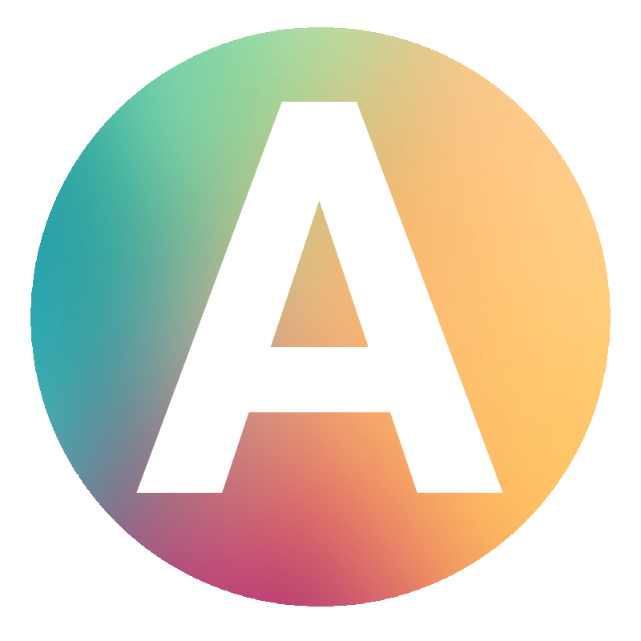

arnaucube - cryptography engineer
blog | notes | github (git-mirror) | twitter
Some of the projects I've enjoyed working on over these past years:
- Folding schemes implementations such as Nova, HyperNova, ProtoGalaxy, CycleFold in the Sonobe library
- Commitment schemes such as KZG10, FRI, IPA
- Elliptic curve signature schemes such as bLSAG ring signatures and blind signatures
- other cryptographic primitives such as go-snark lib, arbo (CPU-parallelized MerkleTree), BabyJubJub elliptic curve, Poseidon hash
- zk circuits such as keccak256-circom, census-proof
- some voting system designs & implementations OVOTE and Blind-OVOTE.
- FHE (full-homomorphic encryption) schemes such as CKKS, BFV, TFHE at fhe-study.
Recent Work:
2023 - now
0xPARC Research -
Applied cryptography researchResearch and implementations of folding schemes.
- privacy-ethereum/sonobe: folding schemes modular library. Implemented Nova, CycleFold, HyperNova and part of ProtoGalaxy. Also designed the onchain verification approach which allowed Sonobe to be the first folding schemes library to achieve verifying folding proofs in Ethereum.
- protogalaxy-poc: ProtoGalaxy folding scheme proof of concept implementation
- privacy-scaling-explorations/multifolding-poc: HyperNova folding scheme proof of concept implementation
2022 - 2023
Vocdoni & Aragon-ZK-Research -
Decentralized governance & voting tooling.Design and implementation of voting schemes using zkSNARKs and other cryptographic schemes.
- vocdoni/keccak256-circom: ethereum sha3 (keccak256) hash function implemented in Circom
-
vocdoni/zk-census-proof: anonymous census proof circuit used in Vocdoni's Blockchain
- aragonzkresearch/ark-anon-vote: (similar design, implemented in arkworks) onchain anonymous voting snark circuit.
- vocdoni/arbo: optimized MerkleTree which parallelizes by CPUs for faster computation, compatible with circomlib implementation
- aragonzkresearch/ark-ec-blind-signatures: Blind signatures over elliptic curve implementation (native & r1cs constraints)
- OVOTE technical document
- Forum post with a high level explanation.
- aragonzkresearch/ovote: implementation of the OVOTE circuits, smart contracts & libs
- aragonzkresearch/ovote-node: OVOTE backend node implemented in Go
- Blind-OVOTE technical document
- Forum post with a high level explanation.
- aragonzkresearch/blind-ovote: Blind-OVOTE implementation in arkworks.
2018 - 2022
Hermez zkRollup -
Decentralized zkRollup on Ethereum.Main task has been to implement the Hermez node, used to launch the mainnet of the zkRollup network (1.0):
hermeznetwork/hermez-node
My focus has been mainly in the TxSelector, TxProcessor (managing the rollup state tree) and BatchBuilder (generating the data structure compatible with the zkSNARK circuits to do the proof generation).
iden3 -
Scalable decentralized identity system with privacy by using zero knowledge proofs.Design and specify the core protocol, develop the core libraries, servers, zk circom circuits and zkSNARK Groth16 Go prover.
- iden3/go-iden3-crypto: cryptographic primitives (SNARK-friendly) used in iden3
- iden3/go-iden3-core: core implementation of the iden3 system
- iden3/go-circom-prover-verifier: implementation of the Groth16 zkSNARK Prover and Verifier compatible with Circom
- iden3/circuits: zkSNARK circuits used by the iden3 core protocol
Some other free time side projects:
-
go-snark-study:
GozkSNARK implementation from scratch (compiler, setup, prover, verifier) -
go-bellman-verifier:
GoGroth16 zkSNARK bellman proof verifier using cloudflare/bn256 Pairing -
babyjubjub-rs: BabyJubJub elliptic curve implementation in
Rust -
kzg-commitments: Kate-Zaverucha-Goldberg (KZG10) Polynomial Commitments in
Go -
fri-commitment: FRI polynomial commitment in
Rust -
ipa-rs: modified Inner Product Argument (IPA) version from Halo paper in
Rustusing arkworks. -
ring-signatures-rs: bLSAG ring signatures implementation in
Rust -
poseidon-rs: Poseidon hash implementation in
Rust -
go-blindsecp256k1: Blind signatures over secp256k1 elliptic curve in
Go(with the compatible typescript implementation) -
merkletree-rs: Sparse MerkleTree implementation in
Rust(also aGoimpl go-merkletree) -
shamirsecretsharing: Shamir's Secret Sharing
Rust&Goimplementation +WASMlib -
evm-rs: partial implementation of the Ethereum Virtual Machine (EVM) in
Rust - kvartalo: a local social cryptocurrency for neigbourhoods, that we used in a Barcelona neighbourhood as experiment during few months. Build on top of Ethereum blockchain & Tendermint Core
-
chip8-rs: CHIP-8 virtual machine emulator written in
Rust(also aGoimpl go-chip8) -
fft-rs: Fast Fourier Transform (FFT) implementation in
Rust - miksi: Ethereum zk-coin-mixer where all the computation & constructions are done offchain and then proved inside a zkSNARK to the smart-contract. (live demo on testnet)
- eth-kzg-ceremony-alt: Alternative implementation of the contributor-client for the Ethereum KZG Trusted Setup Ceremony
blog | github (git-mirror) | twitter